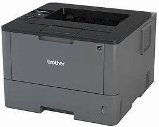

A lézernyomtatók olyan készülékek, amelyek a nyomtatáshoz lézertechnológiát alkalmaznak.
Ezek a nyomtatók általában nagy sebességgel és pontosan nyomtatnak, így ideálisak nagy mennyiségű dokumentum gyors nyomtatására irodai környezetben.
A lézernyomtatók általában hatékonyak és gazdaságosak hosszú távú használatra, és sokféle méretben és funkcióval elérhetők a különböző igények kielégítésére.
